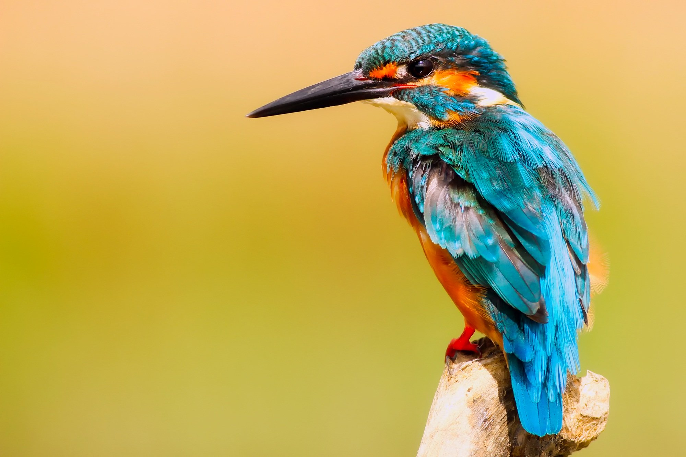
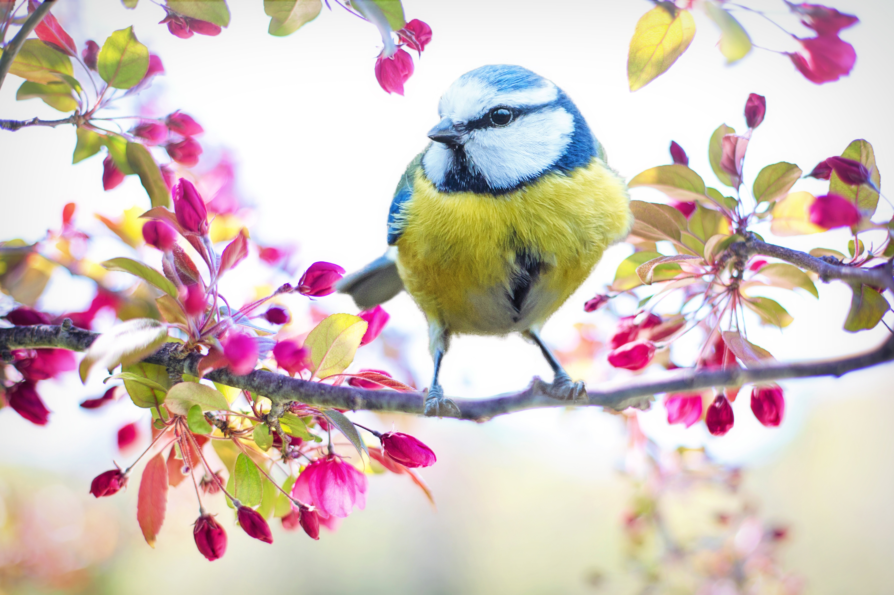

A shot in which the subject is photographed by an encircling or moving camera
A brief, intervening film scene or sequence, not specifically tied to the plot, that appears within a film
A speech, preface, introduction, or brief scene preceding the the main action or plot of a film; contrast to epilogue

There are around 10,000 living species of birds that inhabit different ecosystems from the Arctic to the Antarctic. Many species undertake long distance annual migrations, and many more perform shorter irregular journeys.
There are around 10,000 living species of birds that inhabit different ecosystems from the Arctic to the Antarctic. Many species undertake long distance annual migrations, and many more perform shorter irregular journeys.
There are around 10,000 living species of birds that inhabit different ecosystems from the Arctic to the Antarctic.Many species undertake long distance annual migrations, and many m
There are around 10,000 living species of birds that inhabit different ecosystems from the Arctic to the Antarctic. Many species undertake long distance annual migrations, and many more perform shorter irregular journeys.
There are around 10,000 living species of birds that inhabit different ecosystems from the Arctic to the Antarctic. Many species undertake long distance annual migrations, and many more